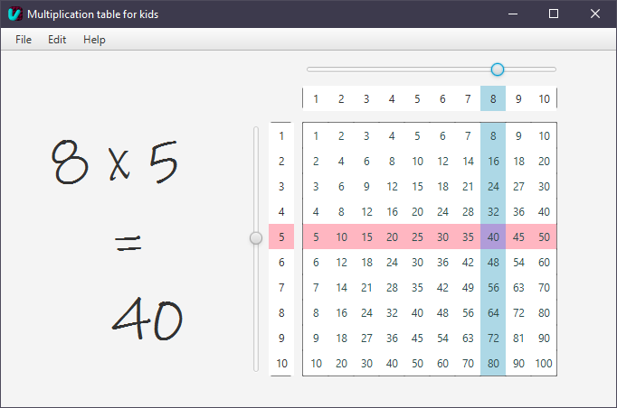

↜ ViziSquareFX
This is a JavaFX project I made to try out how the modern UI elements would look compared to UI components from the AWT/Swing library.
It's basically the multiplication table of the numbers from 1 to 10.
The way you select the numbers is by sliding the sliders on the side of the x axis or the one on the top of the y axis.
Their intersect gets colored a different color to see the product easier

I'd say the app looks pretty good, although it's very simple